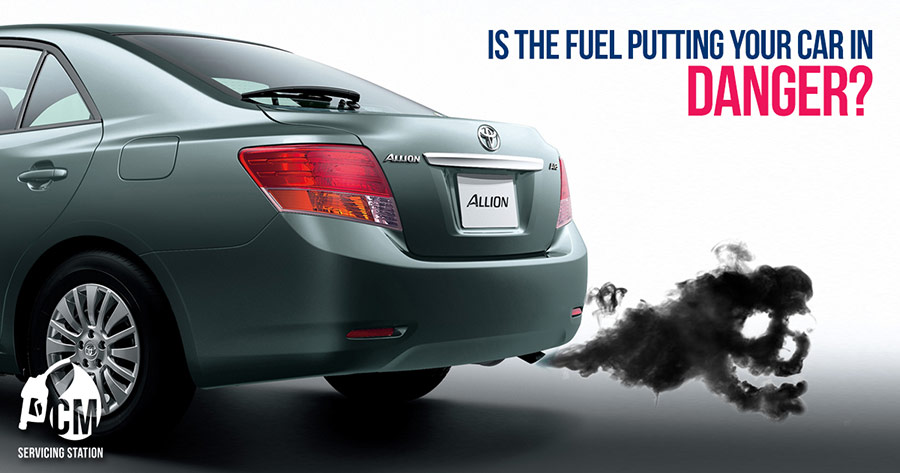
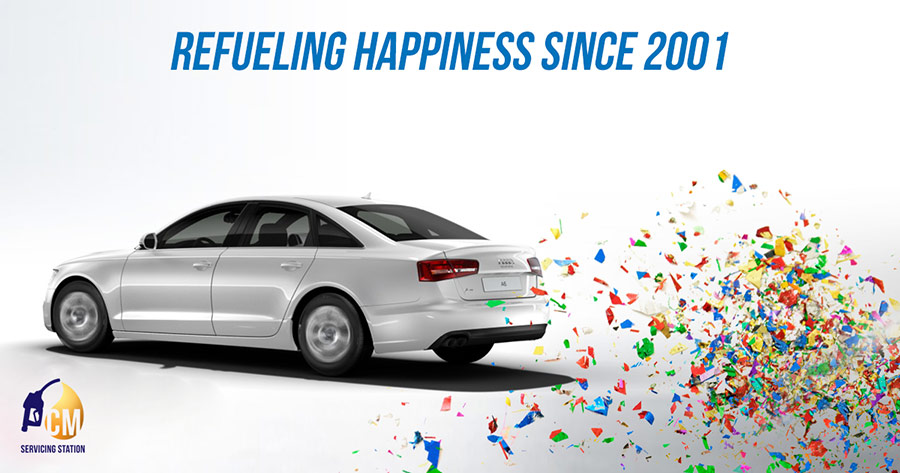

<!DOCTYPE html><html lang="en"><head><title>CM Petrol | Case Studies | WebAble Digital | A Digital Marketing Agency In Bangladesh</title><meta name="description" content="CM petrol's social media campaign by WebAble Digital was the first of its kind in Bangladesh as octane sales increased by 20% within the month."><meta property="og:title" content="CM Petrol | Case Studies | WebAble Digital | A Digital Marketing Agency In Bangladesh"><meta property="og:site_name" content="WebAble Digital"><meta property="og:url" content="http://webable.digital/case-studies/social-media/cm"><meta property="og:description" content="CM petrol's social media campaign by WebAble Digital was the first of its kind in Bangladesh as octane sales increased by 20% within the month."><meta property="og:image" content="http://webable.digital/images/case-cover/webable_casestudy_cmpetrol-1.jpg"><meta charset="utf-8"><link rel="icon" sizes="16x16 32x32 48x48 64x64" href="/images/favicon.ico"><!--link(type="text/css", rel="stylesheet", href="/vendors/bootstrap/css/bootstrap.min.css")--><link type="text/css" rel="stylesheet" href="../../css/main.css"><link rel="stylesheet" href="../../css/sup-styles.css"><link rel="stylesheet" href="http://maxcdn.bootstrapcdn.com/font-awesome/4.3.0/css/font-awesome.min.css"><script src="/js/wow.js"></script><link rel="stylesheet" href="../../css/animate.css"><link rel="stylesheet" href="../../css/nprogress.css"><script src="../../js/nprogress.js"></script><script src="../../js/jquery.smoothState.js"></script><script src="../../js/smoothfunctions.js"> </script><script src="https://maps.googleapis.com/maps/api/js"></script><script src="../../js/typed.js"></script><script src="../../js/script.js"></script><link rel="stylesheet" href="../../css/keyframes.css"><link rel="stylesheet" href="../../css/pageTransitions.css"><meta name="viewport" content="user-scalable=no, width=device-width, initial-scale=1.0, maximum-scale=1.0"><script src="https://cdnjs.cloudflare.com/ajax/libs/modernizr/2.8.3/modernizr.min.js"></script><script>(function(i,s,o,g,r,a,m){i['GoogleAnalyticsObject']=r;i[r]=i[r]||function(){
(i[r].q=i[r].q||[]).push(arguments)},i[r].l=1*new Date();a=s.createElement(o),
m=s.getElementsByTagName(o)[0];a.async=1;a.src=g;m.parentNode.insertBefore(a,m)
})(window,document,'script','//www.google-analytics.com/analytics.js','ga');
ga('create', 'UA-63440796-1', 'auto');
ga('send', 'pageview');
</script></head></html><body><div style="background-color:transparent" class="slideUp"><nav class="top-bar data-topbar row header"><div id="logo" class="left logo"><div class="w-logo"><a href="/"></a></div></div><div class="right"><div id="toggle" class="button_container"><span class="top"></span><span class="middle"></span><span class="bottom"></span></div></div><div id="overlay2" class="overlay2"><div class="left hide"><a href="/"></a></div><nav class="overlay-menu"><ul><li><a href="/work">Work</a></li><li><a href="/about">About</a></li><li><a href="/capabilities">Capabilities</a></li><li><a href="/bable">Bable Blog</a></li><li><a href="/join">Join the team</a></li><li> <a href="/contact">Contact</a></li></ul></nav><div class="social-icons-menu"><ul class="text-align"><li><a href="https://twitter.com/webabledigital"></a><i class="fa fa-twitter"></i></li><li><a href="https://www.linkedin.com/company/webable-bd"></a><i class="fa fa-linkedin"></i></li><li><a href="https://plus.google.com/+WebableBd"> </a><i class="fa fa-google-plus"></i></li><li><a href="https://www.facebook.com/WebAble"></a><i class="fa fa-facebook"></i></li><li><a href="https://instagram.com/webabledigital"></a><i class="fa fa-instagram"></i></li><li><a href="https://www.pinterest.com/WebAbleDigital/"></a><i class="fa fa-pinterest"></i></li></ul></div></div></nav></div><div id="main" class="m-scene"><div class="m-right-panel m-page scene_element scene_element--fadeinup"><div class="mid-body"><div class="row collapse full-width cs-branding-hero"><div class="large-12 columns"><div class="cs-brand-text"><div class="hero-text text-center"><p>Increasing fuel sales by 20% </p></div></div></div></div><div class="row full-width"><div class="case1"><div class="wrapper"> <h3>Challenge</h3><br><p>When Anis, a WebAble co-founder, met the owner of CM Filling Station outside the petrol station. When Anis told him he’s a digital marketer, the man was sceptic. Owner of CM didn’t buy the idea that that digital could generate sales. So Anis took a challenge, asking him to allocate a small budget and not pursue any other marketing efforts to see what happens. </p></div></div></div><div id="cap" class="row wrapper"><div class="case"><h3>PROCESS</h3><h3>Platforms:</h3><br><p>We created a Facebook page, made CM a logo and started building a community on Facebook. </p></div><div class="case"><h3>Media Planning:</h3><br><p>Media budget was next to nothing. We boosted posts to car enthusiasts who were above the age of 28 and are likely to own a car. </p></div><div class="case"><h3>Content Strategy:</h3><br><p>We created beautiful designs with strong CTAs (Call To Action). We also posted exciting updates about the world of car and posted very intelligent messages for car enthusiasts.</p></div><div class="case"><h3>RESULTS </h3><br><p>The results were clear and quick. Sales increased by 20% within a month. From the usual average of 30 litres of octane per month the sales rose to 36 litres on average per month. Thus CM’s owner was convinced digital works, if done well.  </p><p><a href=""><p>Want to invest in growth? Get in touch                   </p></a></p></div></div><div class="row collapse full-width team-pics"><div class="large-6 small-12 columns wow slideInLeft"></div><div class="large-6 small-12 columns wow slideInRight"></div></div><div class="row collapse full-width team-pics"><div class="large-6 small-12 columns wow slideInLeft"></div><div class="large-6 small-12 columns wow slideInRight"></div></div><div class="row collapse full-width team-pics"><div class="large-6 small-12 columns wow slideInLeft"></div><div class="large-6 small-12 columns wow slideInRight"></div></div></div></div></div><div class="footer"><div class="center-div"><div class="list"><ul class="text-align"> <li><a href="/pdf/WebAble_BrandElements.pdf"><h7>BRAND ELEMENTS &nbsp; | &nbsp;</h7></a></li><li><a href="http://webable.digital/bable"> <h7> THE BABLE BLOG   &nbsp; | &nbsp;</h7></a></li><li> <a href="http://webable.digital/work"> <h7>OUR WORK &nbsp; | &nbsp;</h7></a></li><li><a href="http://webable.digital/capabilities"> <h7> OUR SERVICES &nbsp; | &nbsp;</h7></a></li><li> <a href="http://webable.digital/join"> <h7> JOIN THE TEAM </h7></a></li></ul></div><div class="social-icons"><ul class="text-align"><li><a href="https://twitter.com/WebableDigital"></a><i class="fa fa-twitter"></i></li><li><a href="https://www.linkedin.com/company/3544530?trk=tyah&amp;trkInfo=clickedVertical%3Acompany%2Cidx%3A2-1-2%"></a><i class="fa fa-linkedin"></i></li><li><a href="https://plus.google.com/+WebableBd/videos"></a><i class="fa fa-google-plus"></i></li><li><a href="https://www.facebook.com/WebAble?fref=ts"> </a><i class="fa fa-facebook"></i></li><li><a href="https://instagram.com/webabledigital/"></a><i class="fa fa-instagram"></i></li><li><a href="https://www.pinterest.com/WebAbleDigital/"></a><i class="fa fa-pinterest"></i></li></ul></div><div class="text-f"> <h8>©2015 WEBABLE DIGITAL. ALL RIGHTS RESERVED</h8></div></div></div><script src="https://cdnjs.cloudflare.com/ajax/libs/jquery/2.1.4/jquery.min.js"></script><script src="https://cdnjs.cloudflare.com/ajax/libs/fastclick/1.0.6/fastclick.min.js"></script><script src="https://cdnjs.cloudflare.com/ajax/libs/foundation/5.5.2/js/foundation.min.js"></script><script src="https://cdnjs.cloudflare.com/ajax/libs/jquery.nicescroll/3.6.0/jquery.nicescroll.min.js"></script><script src="../../js/foundation/foundation.topbar.js"></script><script src="../../js/sup-topbar.min.js"> </script><script src="../../js/main.js"></script></body>